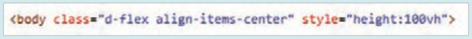
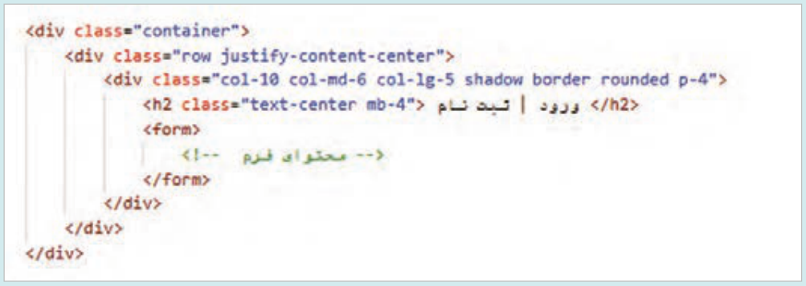
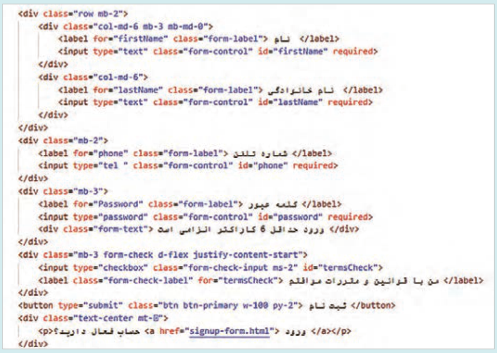
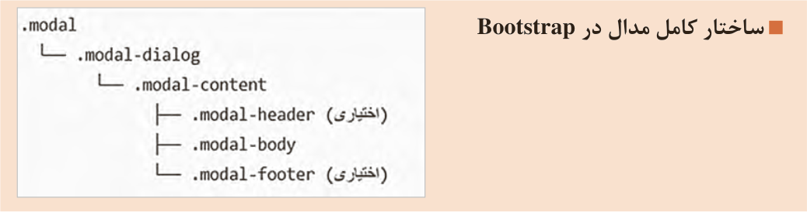
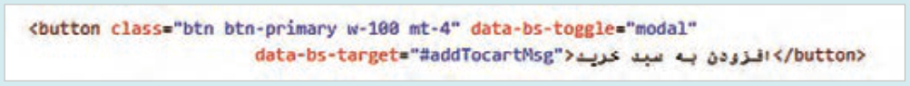
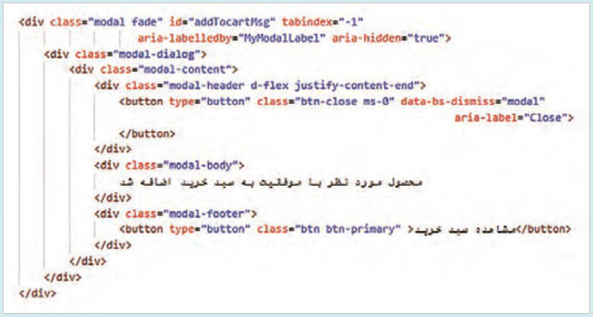
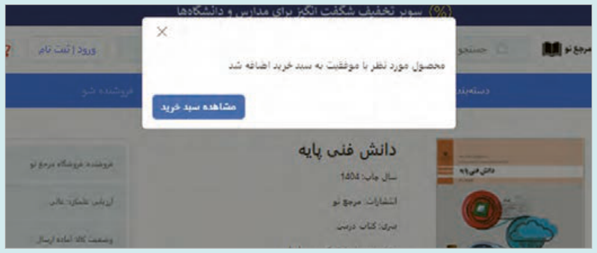
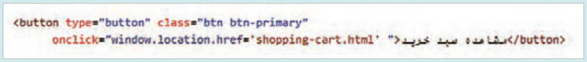

پودمان ۳: صفحات وب تعاملی
فرم و پنجره Modal صفحه ۱۸۰
بوتاسترپ دارای مجموعهای از کلاسهای آماده برای طرحبندی انواع فرمهاست. به کمک این کلاسها میتوان فرمهای واکنشگرا و جذاب را با سرعت بالا و کمترین نیاز به کدنویسی ایجاد نمود. جدول ۱۲ حاوی برخی کلاسهای فرم در بوتاسترپ 5 است.
جدول ۱۲: کلاسهای فرم
نام کلاس
کاربرد
form-controlتعیین استایل فیلدهای ورودی مانند input, textarea و select
form-labelتعیین استایل برچسبهای فرم
form-checkاستایلدهی به کادرهای تأیید و دکمههای رادیویی
form-check-labelاین کلاس برای متن کنار کادر تأیید یا دکمه رادیویی استفاده میشود.
form-check-inputبرای استایلدهی به کادر تأیید و دکمه رادیویی
form-textاین کلاس برای نمایش توضیح کمکی زیر یک فیلد فرم استفاده میشود.
صفحه ۱۸۱
بیشتر بدانید (ادامه)
در صفحه signup-form.html تنها یک فرم نمایش داده میشود. این فرم باید در راستای افقی و عمودی در وسط صفحه ظاهر گردد. بنابراین ویژگیهای برچسب body را به شکل زیر تنظیم کنید:

vh یک واحد اندازهگیری در CSS است که مخفف Viewport Height است. کلمه viewport به بخشی از صفحه اشاره دارد که در معرض دید کاربر است. 1vh برابر 1% ارتفاع viewport است. بنابراین، height:100vh به معنای آن است که ارتفاع عنصر <body> باید برابر 100% ارتفاع viewport باشد. به عبارت دیگر، این عنصر باید تمام ارتفاع صفحه را اشغال کند.
استفاده از کلاسهای d-flex و align-items-center باعث میشود که محتوای بخش body در وسط صفحه قرار گیرد.
درون عنصر body یک عنصر نگهدارنده با محتوای شکل زیر ایجاد کنید:

پهنای فرم باید در دستگاههای مختلف کنترل شود. برای اینکار بهتر است از کلاسهای grid استفاده شود تا بسته به اندازۀ دستگاه، پهنای عنصر نگهدارنده فرم تغییر نماید. در کد فوق یک عنصر نگهدارنده با کلاس row ایجاد شده است و درون آن تنها یک ستون حاوی فرم و عنوان آن موجود است. با توجه به اینکه فرم درون ستون grid قرار دارد، بنابراین پهنای فرم وابسته به پهنای ستون تغییر خواهد کرد.
کلاس justify-content-center باعث قرار گرفتن محتوای عنصر نگهدارنده در وسط صفحه خواهد شد.
کلاسهای col-10 ، col-md-6 و col-lg-5 پهنای ستون grid را در دستگاههای موبایل، تبلت و دسکتاپ تعیین میکنند.
صفحه ۱۸۲
بیشتر بدانید (ادامه)
محتوای فرم را به مطابق کدهای شکل زیر در محل تعیین شده در کد فوق، به صفحه اضافه کنید:

فایل را ذخیره کنید و نتیجه را در مرورگر بررسی کنید.
رنگ متن عنوان فرم را به رنگ آبی و رنگ متن برچسبها را به رنگ خاکستری تغییر دهید. این کار را توسط کلاسهای بوتاسترپ انجام دهید.
زیرخط پیوند «ورود» در پایین صفحه را توسط کلاس بوتاسترپ حذف کنید.
بیشتر بدانید
Modal Esc ، کلیک روی دکمه close یا ناحیهای خارج از پنجره مدال باعث بسته شدن کادر محاورهای میشود.
پنجرۀ مدال دارای سه بخش header ، body و footer است. این بخشها توسط کلاسهای modal-header، modal-body و modal-footer ایجاد میشوند. مجموعه این سه بخش درون یک عنصر نگهدارنده با کلاس modal-content قرار میگیرند.
مدال یک عنصر وابسته به جاوااسکریپت است، پس اضافه کردن فایل جاوااسکریپت بوتاسترپ قبل از </body> ضروری است.
برای نمایش کادر محاورهای نیاز به یک عنصر فعالکننده مانند دکمه است.
صفحه ۱۸۳
بیشتر بدانید (ادامه)

ساختار کامل مدال در Bootstrap
کار کارگاهی
نمایش پیغام اضافه شدن محصول به سبد خرید توسط Modal
در کارگاههای قبلی، صفحه نمایش اطلاعات محصول (product-details.html) را طراحی کردید. در برخی سایتهای فروشگاهی، زمانی که کاربر روی دکمه «افزودن به سبد خرید» کلیک میکند، یک پیغام با محتوای «محصول مورد نظر به سبد خرید اضافه شد» نمایش داده میشود. در این کارگاه قصد داریم صفحه product-details.html را به همین طریق تغییر دهیم.
فایل product-details.html را باز کنید و دکمه افزودن به سبد خرید را به مطابق کد شکل زیر تغییر دهید:

با کلیک روی این دکمه کادر محاورهای (مُدال) با شناسه addTocartMsg ظاهر میشود.
btn : استایل یک دکمۀ بوتاسترپ را به عنصر <button> اختصاص میدهد.
data-bs-toggle="modal": مشخص میکند این دکمه برای باز کردن مدال است.
data-bs-target="#addToCartMsg": مشخص میکند کدام مدال باز شود.
کد مُدال را بعد از برچسب </button> به صفحه اضافه کنید:

صفحه ۱۸۴
کار کارگاهی (ادامه)

tabindex ترتیب انتقال فوکوس (تمرکز) روی عناصر را هنگام استفاده از کلید Tab مشخص میکند. عبارت tabindex=-1 به معنای آن است که مُدال قابلیت دریافت فوکوس توسط کلید Tab را ندارد. btn-close استایل دکمه بستن در پنجره مُدال را بهصورت یک علامت ضربدر مشخص میکند.
data-bs-dismiss="modal": رفتار دکمه close را مشخص میکند؛ بهصورتی که وقتی کاربر روی دکمه کلیک نماید، مُدال بسته شود.
دکمه close بالای پنجره مدال در حالت پیشفرض در سمت راست پنجره ظاهر میشود. به همین دلیل از کلاسهای d-flex ، justify-content-end و ms-0 برای تنظیم محل دکمه استفاده شده است.
بعد از کلیک روی دکمه «مشاهده سبد خرید»، باید صفحه shopping-cart.html باز شود. برای اینکار از ویژگی onclick دکمه استفاده کنید و مقدار آن را برابر یک دستور جاوااسکریپت طبق شکل زیر قرار دهید:

کروسل (Carousel )
کروسل یک ابزار مبتنی بر جاوااسکریپت است که برای ایجاد یک مجموعه اسلاید یا گالری تصاویر افقی استفاده میشود. کروسل امکان نمایش چند محتوا یا تصویر را در یک فضای محدود فراهم میکند؛ بهطوریکه کاربران بتوانند با استفاده از دکمههای کنترلی یا با کشیدن (swipe )، محتواهای بعدی را مشاهده کنند. در یک سایت فروشگاهی، کروسلها یا اسلایدرها امکان نمایش مجموعهای از محصولات یا محتوای تبلیغاتی را بهصورت چرخشی فراهم میکنند. استفاده از کروسل تجربۀ کاربری بهتری را برای کاربران ارائه میکند. برای ایجاد یک کروسل بوتاسترپ از کلاس carousel و کلاسهای زیرمجموعه آن استفاده میشود. جدول۱۳ اسامی کلاسها و کاربرد آنها را توصیف میکند:
Page 180
Bootstrap has a set of ready-made classes for laying out all kinds of forms. With them you can build responsive, attractive forms quickly and with very little code. Table 12 contains some of the form classes in Bootstrap 5.
Table 12: Form classes
Class name
Use
form-controlStyles input fields such as input, textarea, and select
form-labelStyles form labels
form-checkStyles check boxes and radio buttons
form-check-labelUsed for the text next to a check box or radio button.
form-check-inputFor styling a check box and radio button
form-textUsed to show a help text under a form field.
Page 181
Learn more (continued)
The page signup-form.html shows only one form. It must appear in the middle of the page horizontally and vertically. So set the properties of the body tag as below:
vh is a CSS unit of measurement, short for Viewport Height. The viewport is the part of the page the user can see. 1vh equals 1% of the viewport height. So height:100vh means the <body> element must be 100% of the viewport height; in other words, it must take the full height of the page.
The d-flex and align-items-center classes put the content of the body in the middle of the page.
Inside the body element, create a container with the content in the figure below:
The width of the form must be controlled on different devices. For this it is best to use grid classes, so that the width of the form's container changes with the device size. In the code above, a container with the class row is created, with only one column in it holding the form and its title. Since the form is inside a grid column, its width changes with the width of the column.
The justify-content-center class puts the content of the container in the middle of the page.
The classes col-10, col-md-6, and col-lg-5 set the width of the grid column on phones, tablets, and desktops.
Page 182
Learn more (continued)
Add the content of the form, following the code in the figure below, at the marked place in the code above:
Save the file and check the result in the browser.
Change the color of the form title to blue and the color of the labels to gray, using Bootstrap classes.
Remove the underline of the «Login» link at the bottom of the page with a Bootstrap class.
Learn more
Modal : a modal is a user interface shown as a floating dialog box on top of the page that makes the user interact with it before going back to the web page. It is usually used to show extra information, confirmations, forms, or other interactions with the user. Pressing Esc, clicking the close button, or clicking outside the modal window closes the dialog box.
A modal window has three parts: header, body, and footer. They are created with the classes modal-header, modal-body, and modal-footer. These three parts sit together inside a container with the class modal-content.
A modal depends on JavaScript, so adding Bootstrap's JavaScript file before </body> is essential.
To show the dialog box, a triggering element such as a button is needed.
Page 183
Learn more (continued)
The complete structure of a modal in Bootstrap
Workshop
Showing a «product added to cart» message with a Modal
In earlier workshops you designed the product information page (product-details.html). In some shopping sites, when the user clicks «Add to cart», a message saying «The product has been added to your cart» is shown. In this workshop we will change the page product-details.html in the same way.
Open the file product-details.html and change the add-to-cart button as in the code in the figure below:
Clicking this button shows the dialog box (modal) with the ID addTocartMsg.
btn: gives the <button> element the style of a Bootstrap button.
data-bs-toggle="modal": says that this button opens a modal.
data-bs-target="#addToCartMsg": says which modal opens.
Add the modal code to the page after the </button> tag:
Page 184
Workshop (continued)
tabindex sets the order in which the focus moves between elements when the Tab key is used. tabindex=-1 means the modal cannot get focus with the Tab key. btn-close styles the close button of the modal window as a cross.
data-bs-dismiss="modal": sets the behavior of the close button, so that the modal closes when the user clicks it.
By default, the close button at the top of the modal window appears on the right of the window. That is why the classes d-flex, justify-content-end, and ms-0 are used to position it.
After clicking the «View cart» button, the page shopping-cart.html must open. For this, use the button's onclick attribute and set its value to a JavaScript statement as in the figure below:
کروسل (Carousel)A carousel is a JavaScript-based tool used to create a set of slides or a horizontal image gallery. It lets several pieces of content or images be shown in a limited space, and users can see the next ones with the control buttons or by swiping (swipe). In a shopping site, carousels or sliders show a set of products or promotional content in rotation. Carousels give users a better experience. To create a Bootstrap carousel, the carousel class and its child classes are used. Table 13 lists the class names and what they do: